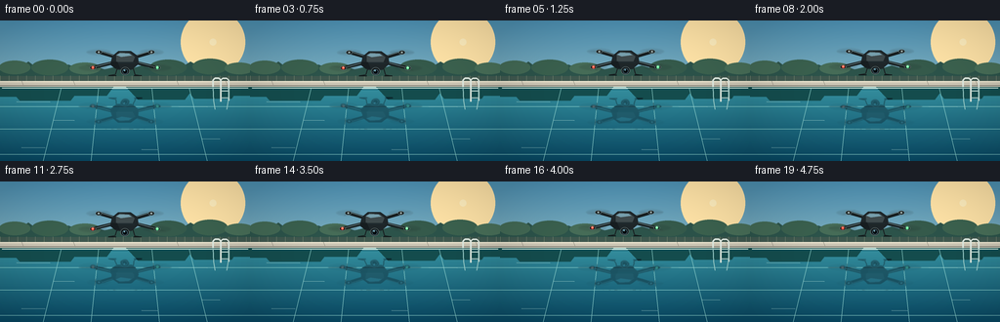
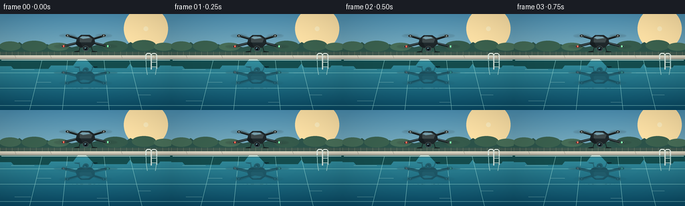

CODING AGENTS AS PIXEL WORLD MODELS
traex/GPT-5.6-Sol · phygen_059
点击播放 · 原生 RGB 像素
逐轮保存的候选
回放视频、检查图与代码变化。
每份候选均可单独播放。实际图片检查记录在下方工具轨迹中。
候选 01播放与检查图
点击播放 · 原生 RGB 像素


展开代码变化
--- 上一保存版本
+++ 本次保存版本
@@ -0,0 +1,310 @@
+"""Procedurally render a quadcopter hovering over a glassy swimming pool.
+
+The scene is deliberately rendered at 4x resolution and reduced with Lanczos
+filtering. This keeps the small drone readable at the required 256x144 output
+resolution without relying on any external assets or rendering software.
+"""
+
+from pathlib import Path
+import math
+
+import numpy as np
+from PIL import Image, ImageDraw, ImageFilter
+
+import artifact_io
+
+
+W, H, N = 256, 144, 20
+S = 4
+WS, HS = W * S, H * S
+WATERLINE = 68
+
+
+def sc(v):
+ return int(round(v * S))
+
+
+def pts(seq):
+ return [(sc(x), sc(y)) for x, y in seq]
+
+
+def ellipse(draw, box, **kwargs):
+ draw.ellipse(tuple(sc(v) for v in box), **kwargs)
+
+
+def line(draw, xy, width=1, **kwargs):
+ draw.line(pts(xy), width=max(1, sc(width)), **kwargs)
+
+
+def polygon(draw, xy, **kwargs):
+ draw.polygon(pts(xy), **kwargs)
+
+
+def gradient_image(top, bottom, height=HS, width=WS):
+ t = np.linspace(0, 1, height, dtype=np.float32)[:, None, None]
+ a = np.array(top, dtype=np.float32)[None, None, :]
+ b = np.array(bottom, dtype=np.float32)[None, None, :]
+ rgb = a * (1 - t) + b * t
+ return np.repeat(rgb, width, axis=1).astype(np.uint8)
+
+
+def make_static_background():
+ # Warm, very calm late-afternoon light gives both the aircraft and its
+ # reflection enough contrast against the water.
+ base = gradient_image((76, 143, 177), (192, 216, 207))
+ image = Image.fromarray(base, "RGB").convert("RGBA")
+ d = ImageDraw.Draw(image, "RGBA")
+
+ # Soft sun glow in the upper right, composed from translucent discs.
+ for r in range(33, 2, -2):
+ a = int(1.5 * (34 - r)) if r > 20 else 10
+ ellipse(d, (218-r, 22-r, 218+r, 22+r), fill=(255, 227, 167, min(a, 17)))
+ ellipse(d, (214.5, 18.5, 221.5, 25.5), fill=(255, 238, 190, 155))
+
+ # Distant modern garden and trees. Their subdued values create a clean
+ # horizon while a few recognizable silhouettes establish an outdoor pool.
+ polygon(d, [(0, 51), (10, 47), (18, 49), (29, 42), (37, 48),
+ (48, 44), (58, 49), (70, 45), (82, 50), (94, 46),
+ (107, 50), (120, 47), (132, 50), (145, 46), (158, 50),
+ (173, 44), (184, 49), (195, 42), (206, 48), (220, 43),
+ (234, 49), (246, 45), (256, 49), (256, 65), (0, 65)],
+ fill=(44, 83, 74, 255))
+ # Tree highlights and depth clusters.
+ for x, y, rx, ry, col in [
+ (15, 48, 16, 7, (66, 104, 84, 210)),
+ (51, 48, 19, 8, (58, 96, 78, 220)),
+ (87, 49, 16, 6, (70, 108, 87, 210)),
+ (172, 48, 19, 8, (53, 90, 75, 220)),
+ (215, 47, 18, 8, (60, 98, 79, 220)),
+ (245, 49, 15, 6, (72, 110, 88, 210)),
+ ]:
+ ellipse(d, (x-rx, y-ry, x+rx, y+ry), fill=col)
+
+ # Low privacy wall, warm wood screen, and pool deck.
+ d.rectangle((0, sc(57), WS, sc(62)), fill=(63, 87, 78, 255))
+ for x in range(0, 257, 9):
+ line(d, [(x, 56.5), (x, 62)], width=.45, fill=(113, 129, 108, 115))
+ d.rectangle((0, sc(62), WS, sc(68)), fill=(205, 199, 181, 255))
+ d.rectangle((0, sc(62), WS, sc(63)), fill=(237, 229, 207, 210))
+ line(d, [(0, 66.4), (256, 66.4)], width=.7, fill=(130, 127, 117, 140))
+ for x in (22, 75, 181, 231):
+ line(d, [(x, 62), (x+2, 67)], width=.45, fill=(147, 143, 130, 100))
+
+ # Pool water. A clean vertical gradient and very sparse details preserve
+ # the requested glassy, mirror-like appearance.
+ y0 = sc(WATERLINE)
+ wh = HS - y0
+ wt = np.linspace(0, 1, wh, dtype=np.float32)[:, None, None]
+ c0 = np.array((53, 143, 158), np.float32)[None, None, :]
+ c1 = np.array((8, 72, 99), np.float32)[None, None, :]
+ water = np.repeat(c0 * (1-wt) + c1 * wt, WS, axis=1).astype(np.uint8)
+ image.alpha_composite(Image.fromarray(water, "RGB").convert("RGBA"), (0, y0))
+ d = ImageDraw.Draw(image, "RGBA")
+
+ # Reflection of sky near the far edge and dark garden silhouettes.
+ d.rectangle((0, sc(68), WS, sc(70)), fill=(154, 198, 196, 90))
+ for x, wid, ht, alpha in [(8, 26, 10, 42), (45, 38, 14, 38),
+ (92, 24, 9, 32), (164, 35, 13, 39),
+ (217, 28, 12, 38), (246, 20, 9, 34)]:
+ polygon(d, [(x-wid, 68), (x+wid, 68),
+ (x+wid*.72, 68+ht), (x-wid*.65, 68+ht)],
+ fill=(20, 76, 77, alpha))
+ # Narrow submerged tile edge makes this unmistakably a constructed pool.
+ line(d, [(2, 69), (254, 69)], width=1, fill=(193, 224, 216, 155))
+ line(d, [(2, 70.5), (254, 70.5)], width=.4, fill=(10, 79, 96, 150))
+
+ # Barely visible tile perspective under the water.
+ for y, a in [(88, 18), (111, 13), (137, 10)]:
+ line(d, [(0, y), (256, y)], width=.45, fill=(141, 210, 205, a))
+ for xb in (44, 93, 163, 212):
+ line(d, [(128 + (xb-128)*.78, 69), (xb, 144)], width=.45,
+ fill=(147, 214, 208, 10))
+
+ # Chrome pool ladder at far right, plus its restrained water reflection.
+ line(d, [(218, 68), (218, 61), (220, 59), (224, 59), (226, 61), (226, 83)],
+ width=1.65, fill=(220, 231, 222, 245))
+ line(d, [(226, 68), (226, 61), (228, 59), (232, 59), (234, 61), (234, 82)],
+ width=1.55, fill=(225, 235, 227, 235))
+ line(d, [(226, 72), (234, 72)], width=1.05, fill=(195, 219, 213, 200))
+ line(d, [(226, 79), (234, 79)], width=1.0, fill=(183, 210, 206, 175))
+ line(d, [(218, 69), (218.5, 82), (220, 91)], width=1.1,
+ fill=(150, 200, 196, 68))
+ line(d, [(234, 69), (233.5, 82), (232, 91)], width=1.0,
+ fill=(150, 200, 196, 58))
+ return image
+
+
+def blade_polygon(cx, cy, radius, ang, yscale=.23, thickness=1.2):
+ """An elongated tapered rotor blade in an oblique horizontal plane."""
+ ca, sa = math.cos(ang), math.sin(ang)
+ # Perpendicular in the rotor plane, then squash vertical screen component.
+ ux, uy = ca, sa * yscale
+ vx, vy = -sa, ca * yscale
+ return [(cx + ux*2 + vx*thickness, cy + uy*2 + vy*thickness),
+ (cx + ux*radius + vx*.35, cy + uy*radius + vy*.35),
+ (cx + ux*radius - vx*.35, cy + uy*radius - vy*.35),
+ (cx + ux*2 - vx*thickness, cy + uy*2 - vy*thickness),
+ (cx - ux*2 - vx*thickness, cy - uy*2 - vy*thickness),
+ (cx - ux*radius - vx*.35, cy - uy*radius - vy*.35),
+ (cx - ux*radius + vx*.35, cy - uy*radius + vy*.35),
+ (cx - ux*2 + vx*thickness, cy - uy*2 + vy*thickness)]
+
+
+def render_drone(cx, cy, rotor_phase):
+ """Draw the aircraft to its own transparent full-frame layer."""
+ layer = Image.new("RGBA", (WS, HS), (0, 0, 0, 0))
+
+ # Rotor motion is softly blurred on a separate layer.
+ blur = Image.new("RGBA", (WS, HS), (0, 0, 0, 0))
+ bd = ImageDraw.Draw(blur, "RGBA")
+ rotors = [(-27, -9, 12.5, .00), (27, -9, 12.5, .55),
+ (-33, 7, 14.5, 1.10), (33, 7, 14.5, 1.65)]
+ for dx, dy, rad, po in rotors:
+ x, y = cx+dx, cy+dy
+ ellipse(bd, (x-rad, y-rad*.25, x+rad, y+rad*.25),
+ fill=(23, 30, 31, 27), outline=(225, 236, 231, 30), width=sc(.35))
+ for add, alpha in [(0, 72), (.45, 36)]:
+ polygon(bd, blade_polygon(x, y, rad, rotor_phase+po+add),
+ fill=(25, 30, 31, alpha))
+ blur = blur.filter(ImageFilter.GaussianBlur(sc(.50)))
+ layer.alpha_composite(blur)
+ d = ImageDraw.Draw(layer, "RGBA")
+
+ # Arms are carbon-fibre dark, edged by a cool sky highlight.
+ arm_targets = [(-27, -9), (27, -9), (-33, 7), (33, 7)]
+ for dx, dy in arm_targets:
+ line(d, [(cx, cy-1), (cx+dx, cy+dy)], width=3.6,
+ fill=(23, 30, 31, 255))
+ line(d, [(cx, cy-2), (cx+dx*.93, cy+dy-.7)], width=.65,
+ fill=(127, 147, 147, 175))
+
+ # Motor pods and crisp hubs sit above the moving propeller blur.
+ for i, (dx, dy, rad, po) in enumerate(rotors):
+ x, y = cx+dx, cy+dy
+ ellipse(d, (x-3.2, y-2.0, x+3.2, y+2.1), fill=(18, 24, 26, 255),
+ outline=(105, 121, 121, 230), width=sc(.45))
+ ellipse(d, (x-1.35, y-1.15, x+1.35, y+1.15), fill=(94, 105, 103, 255))
+ ellipse(d, (x-.55, y-.5, x+.55, y+.5), fill=(201, 210, 203, 220))
+
+ # Streamlined body, top shell, nose, and small battery seam.
+ polygon(d, [(cx-13, cy-5), (cx-7, cy-10), (cx+6, cy-10),
+ (cx+13, cy-5), (cx+14, cy+3), (cx+7, cy+9),
+ (cx-8, cy+9), (cx-15, cy+3)], fill=(30, 38, 41, 255))
+ polygon(d, [(cx-9, cy-6), (cx-5, cy-9), (cx+5, cy-8),
+ (cx+10, cy-4), (cx+8, cy+1), (cx-9, cy+1)],
+ fill=(62, 73, 75, 255))
+ polygon(d, [(cx-9, cy-6), (cx-5, cy-8), (cx+4, cy-7.5),
+ (cx+7, cy-5.5), (cx-4, cy-4)], fill=(139, 156, 155, 105))
+ line(d, [(cx-9, cy+2), (cx+10, cy+2)], width=.6, fill=(10, 16, 18, 200))
+ polygon(d, [(cx-14, cy+1), (cx-8, cy+1), (cx-5, cy+8),
+ (cx-10, cy+8), (cx-15, cy+4)], fill=(22, 29, 32, 255))
+
+ # Gimbal camera and landing struts under the nose.
+ line(d, [(cx-8, cy+7), (cx-10, cy+14), (cx-16, cy+15)], width=1.1,
+ fill=(24, 30, 31, 240))
+ line(d, [(cx+8, cy+7), (cx+10, cy+14), (cx+16, cy+15)], width=1.1,
+ fill=(24, 30, 31, 240))
+ line(d, [(cx-17, cy+15), (cx-9, cy+15)], width=1.0, fill=(14, 20, 22, 235))
+ line(d, [(cx+9, cy+15), (cx+17, cy+15)], width=1.0, fill=(14, 20, 22, 235))
+ ellipse(d, (cx-4.5, cy+6.5, cx+4.5, cy+14.5), fill=(18, 24, 26, 255),
+ outline=(104, 119, 118, 255), width=sc(.55))
+ ellipse(d, (cx-2.7, cy+8.3, cx+2.7, cy+13.5), fill=(5, 11, 15, 255),
+ outline=(86, 123, 139, 255), width=sc(.55))
+ ellipse(d, (cx-1.4, cy+8.9, cx+.2, cy+10.4), fill=(134, 190, 206, 210))
+
+ # Navigation lights add scale and make the four corners legible.
+ ellipse(d, (cx-34.6, cy+5.3, cx-31.4, cy+8.4), fill=(232, 64, 48, 235))
+ ellipse(d, (cx+31.4, cy+5.3, cx+34.6, cy+8.4), fill=(88, 228, 142, 235))
+ ellipse(d, (cx-33.7, cy+5.9, cx-32.3, cy+7.3), fill=(255, 174, 142, 255))
+ ellipse(d, (cx+32.3, cy+5.9, cx+33.7, cy+7.3), fill=(191, 255, 213, 255))
+ return layer
+
+
+def make_reflection(drone, frame_index):
+ """Mirror the rendered drone in the water with tiny coherent ripples."""
+ # PIL affine parameters map output coordinates back to the input.
+ mirrored = drone.transform(
+ drone.size, Image.Transform.AFFINE,
+ (1, 0, 0, 0, -1, sc(2 * WATERLINE)),
+ resample=Image.Resampling.BICUBIC,
+ )
+ arr = np.array(mirrored)
+ out = np.zeros_like(arr)
+ # A few sub-pixel horizontal row offsets read as calm surface undulation;
+ # broad waves would contradict the requested glassy pool.
+ for yy in range(sc(WATERLINE), HS):
+ yf = yy / S
+ shift = int(round(S * (0.30*math.sin(yf*.72 + frame_index*.20)
+ + 0.12*math.sin(yf*1.61-frame_index*.13))))
+ out[yy] = np.roll(arr[yy], shift, axis=0)
+ # Dark teal tint, reduced alpha, and a gentle depth fade.
+ out[..., 0] = (out[..., 0].astype(np.float32)*.36 + 5).astype(np.uint8)
+ out[..., 1] = (out[..., 1].astype(np.float32)*.48 + 18).astype(np.uint8)
+ out[..., 2] = (out[..., 2].astype(np.float32)*.53 + 24).astype(np.uint8)
+ for yy in range(sc(WATERLINE), HS):
+ fade = max(.20, .48 - .0028*(yy/S-WATERLINE))
+ out[yy, :, 3] = (out[yy, :, 3].astype(np.float32)*fade).astype(np.uint8)
+ ref = Image.fromarray(out, "RGBA").filter(ImageFilter.GaussianBlur(sc(.28)))
+ return ref
+
+
+def add_water_details(image, frame_index):
+ d = ImageDraw.Draw(image, "RGBA")
+ phase = 2 * math.pi * frame_index / N
+
+ # Extremely restrained horizontal glints; fixed locations avoid making the
+ # water look choppy while their intensity gently breathes over five seconds.
+ glints = [(17, 83, 34), (55, 102, 21), (183, 88, 29),
+ (207, 121, 18), (22, 130, 24), (145, 132, 16)]
+ for i, (x, y, length_) in enumerate(glints):
+ bright = int(15 + 9*(.5+.5*math.sin(phase+i*1.7)))
+ line(d, [(x, y), (x+length_, y+.15)], width=.45,
+ fill=(190, 234, 224, bright))
+
+ # Soft downwash rings directly beneath the hovering drone. They remain
+ # subtle enough that the reflected aircraft stays intact and readable.
+ ring = Image.new("RGBA", (WS, HS), (0, 0, 0, 0))
+ rd = ImageDraw.Draw(ring, "RGBA")
+ for k in range(3):
+ age = (frame_index / N + k/3) % 1.0
+ rx = 8 + age*18
+ ry = 1.0 + age*1.8
+ alpha = int(24*(1-age))
+ ellipse(rd, (128-rx, 111-ry, 128+rx, 111+ry),
+ outline=(166, 224, 218, alpha), width=sc(.42))
+ image.alpha_composite(ring.filter(ImageFilter.GaussianBlur(sc(.18))))
+
+
+def render_frame(i, background):
+ phase = 2 * math.pi * i / N
+ # Slow closed-loop hover motion. Displacement is less than a pixel, so the
+ # craft feels airborne rather than wandering through the scene.
+ cx = 128 + .55 * math.sin(phase)
+ cy = 41.0 + .75 * math.sin(phase*2 + .35)
+ rotor_phase = i * 1.93
+ drone = render_drone(cx, cy, rotor_phase)
+ frame = background.copy()
+ frame.alpha_composite(make_reflection(drone, i))
+ add_water_details(frame, i)
+ frame.alpha_composite(drone)
+
+ # Very mild cinematic vignette focuses attention without crushing detail.
+ arr = np.asarray(frame.convert("RGB"), dtype=np.float32)
+ yy, xx = np.mgrid[0:HS, 0:WS]
+ nx = (xx-WS/2)/(WS/2)
+ ny = (yy-HS/2)/(HS/2)
+ vig = np.clip(1.025 - .09*(nx*nx + ny*ny), .87, 1.0)[..., None]
+ arr = np.clip(arr*vig, 0, 255).astype(np.uint8)
+ final = Image.fromarray(arr, "RGB").resize((W, H), Image.Resampling.LANCZOS)
+ return np.asarray(final, dtype=np.uint8)
+
+
+def main():
+ background = make_static_background()
+ frames = np.stack([render_frame(i, background) for i in range(N)])
+ artifact_io.save(frames, Path(__file__).resolve().parent)
+ print(f"saved {frames.shape} {frames.dtype}; range={frames.min()}..{frames.max()}")
+
+
+if __name__ == "__main__":
+ main()
可观测工具轨迹
实际执行的命令与返回图片。
命令 1exit 0
/bin/bash -lc "ls -la && printf '\\n--- prompt.txt ---\\n' && cat prompt.txt && printf '\\n--- GENERATION_RULES.md ---\\n' && cat GENERATION_RULES.md && printf '\\n--- task_spec.json ---\\n' && cat task_spec.json"
命令 2exit 0
/bin/bash -lc "find . -maxdepth 3 -type f -not -path './.git/*' -printf '%p\\n' | sort; printf '\\n--- tools ---\\n'; command -v ffmpeg || true; command -v blender || true; command -v python3 || true; python3 - <<'PY' mods=['numpy','PIL','cv2','imageio','moviepy','matplotlib','scipy'] for m in mods: try: x=__import__(m); print(m,'OK',getattr(x,'__version__','')) except Exception as e: print(m,'NO',e) PY"
命令 3exit 0
/bin/bash -lc 'cat artifact_io.py'
命令 4exit 0
/bin/bash -lc 'cat player_template.html'
命令 5exit 0
/bin/bash -lc 'python3 generate.py'
命令 6exit 0
/bin/bash -lc "python3 - <<'PY'
from pathlib import Path
import numpy as np
from PIL import Image
p=Path('.')
z=np.load('pixels.npz')['pixels']
assert z.shape==(144,256,20), z.shape
assert z.dtype==np.uint32, z.dtype
# unpack generated RGB frames for checks
f=np.stack([np.asarray(Image.open(f'frames/{i:02d}.png').convert('RGB')) for i in range(20)])
assert f.shape==(20,144,256,3) and f.dtype==np.uint8
# frame continuity: mean absolute delta should be subtle, but not static
mad=np.abs(np.diff(f.astype(np.int16),axis=0)).mean(axis=(1,2,3))
changed=(np.any(f[1:]"'!=f[:-1],axis=3)).sum(axis=(1,2))
# contrast against local surroundings in craft and expected reflected craft zones
lum=f.mean(axis=3)
craft=lum[:,24:58,85:171]
craft_bg=np.concatenate([lum[:,24:58,60:82],lum[:,24:58,174:196]],axis=2)
refl=lum[:,78:116,85:171]
water=np.concatenate([lum[:,78:116,60:82],lum[:,78:116,174:196]],axis=2)
print('"'schema:',f.shape,f.dtype,'pixels:',z.shape,z.dtype)
print('files:',len(list(Path('frames').glob('*.png'))),'index',Path('index.html').stat().st_size,'npz',Path('pixels.npz').stat().st_size)
print('temporal MAD min/mean/max:',mad.min(),mad.mean(),mad.max())
print('changed pixels min/mean/max:',changed.min(),changed.mean(),changed.max(),'of',144*256)
print('craft darkest percentile / adjacent bg:',np.percentile(craft,10),np.percentile(craft_bg,10))
print('reflection darkest percentile / adjacent water:',np.percentile(refl,10),np.percentile(water,10))
print('first-last loop MAD:',np.abs(f[0].astype(int)-f[-1].astype(int)).mean())
assert mad.min()>0.05 and mad.max()<5
assert np.percentile(craft,10) < np.percentile(craft_bg,10)-15
assert np.percentile(refl,10) < np.percentile(water,10)-5
assert Path('inspection.png').is_file() and Path('transition_check.png').is_file() and Path('index.html').is_file()
print('VALIDATION PASSED')
PY
printf '\\nOutput inventory:\\n'
find . -maxdepth 2 -type f -printf '%p %s bytes\\n' | sort"保存候选 1 份；完成命令 6 次；可验证图片返回 0 张。原始 API 响应与完整日志保留在本地。